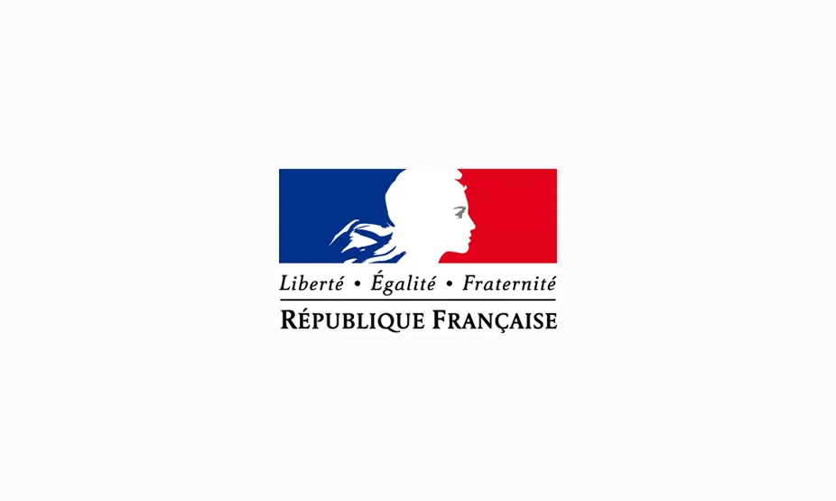
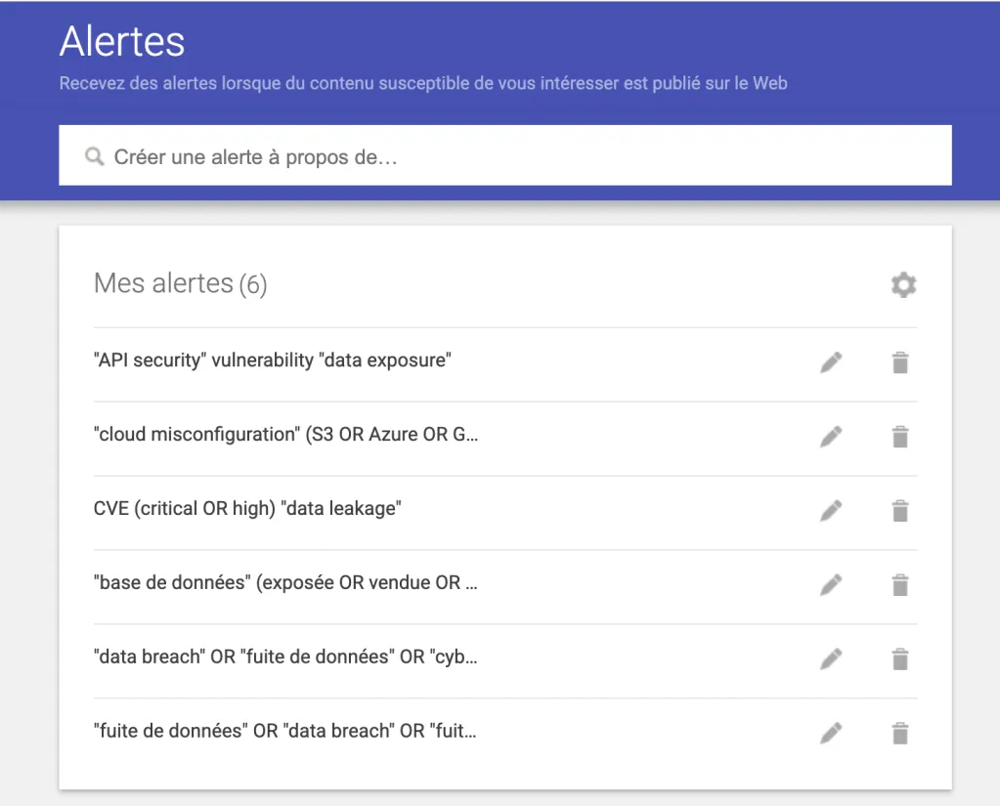

Les fuites de données correspondent à la divulgation ou au vol d'informations sensibles, comme des mots de passe, des données personnelles ou professionnelles. Elles peuvent être causées par des attaques informatiques, des erreurs humaines ou des failles de sécurité dans les systèmes informatiques. Cette veille technologique consiste à suivre les fuites de données récentes, comprendre leurs causes et analyser les solutions mises en place pour les éviter.
Les fuites de données sont devenues l'un des risques majeurs du numérique : cyberattaques, erreurs humaines et failles de sécurité exposent chaque jour des millions de données personnelles et professionnelles.
Lire l'articleLes cyberattaques se multiplient en France, exposant chaque jour des données sensibles. Entre piratages, rançongiciels et failles de sécurité, les conséquences peuvent être graves pour les citoyens comme pour les organisations.
Lire l'article
Les fuites de données touchent aujourd'hui tout le monde. Savoir anticiper les risques et réagir rapidement peut faire toute la différence face aux cybermenaces.
Se renseignerFace à la multiplication des cyberattaques, comprendre les risques, mettre en place de bonnes pratiques et réagir rapidement en cas de problème.
Se renseignerCette veille technologique me permet de mieux comprendre l'importance de la sécurité des données et les risques liés aux fuites d'informations, tout en suivant l'évolution des menaces et des solutions mises en place dans le domaine informatique.
Afin de maintenir une expertise constante sur les menaces émergentes, j'ai mis en place un système de veille automatisé via Google Alerts. Cette approche me permet de surveiller en temps réel les incidents critiques, les fuites de bases de données et les vulnérabilités majeures à l'échelle mondiale. En ciblant des mots-clés spécifiques et des opérateurs de recherche avancés, j'analyse les tendances d'attaques pour mieux anticiper les risques et comprendre les vecteurs d'exposition des données actuels.

Une sélection de mots-clés ciblés (vulnérabilités API, mauvaises configurations cloud, CVE critiques, fuites de bases de données...) pour suivre l'actualité de la cybersécurité au fil de l'eau.